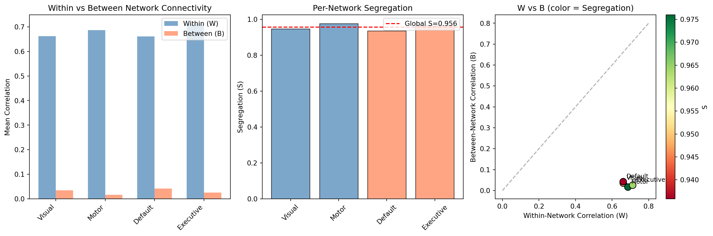
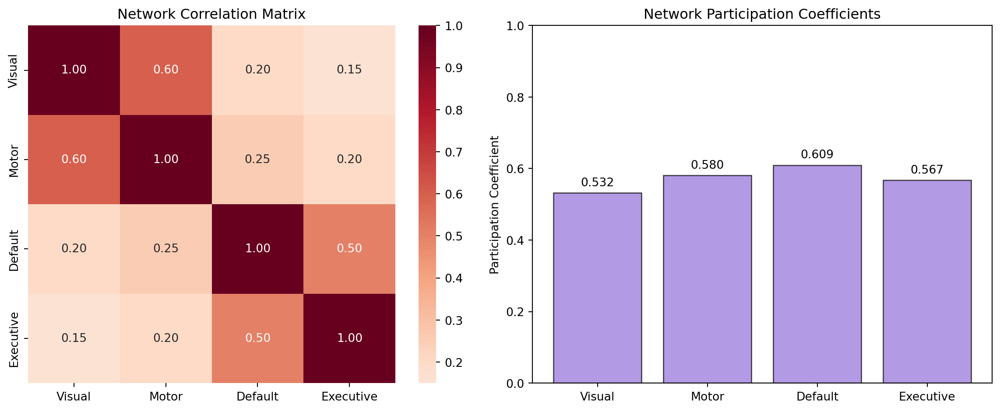
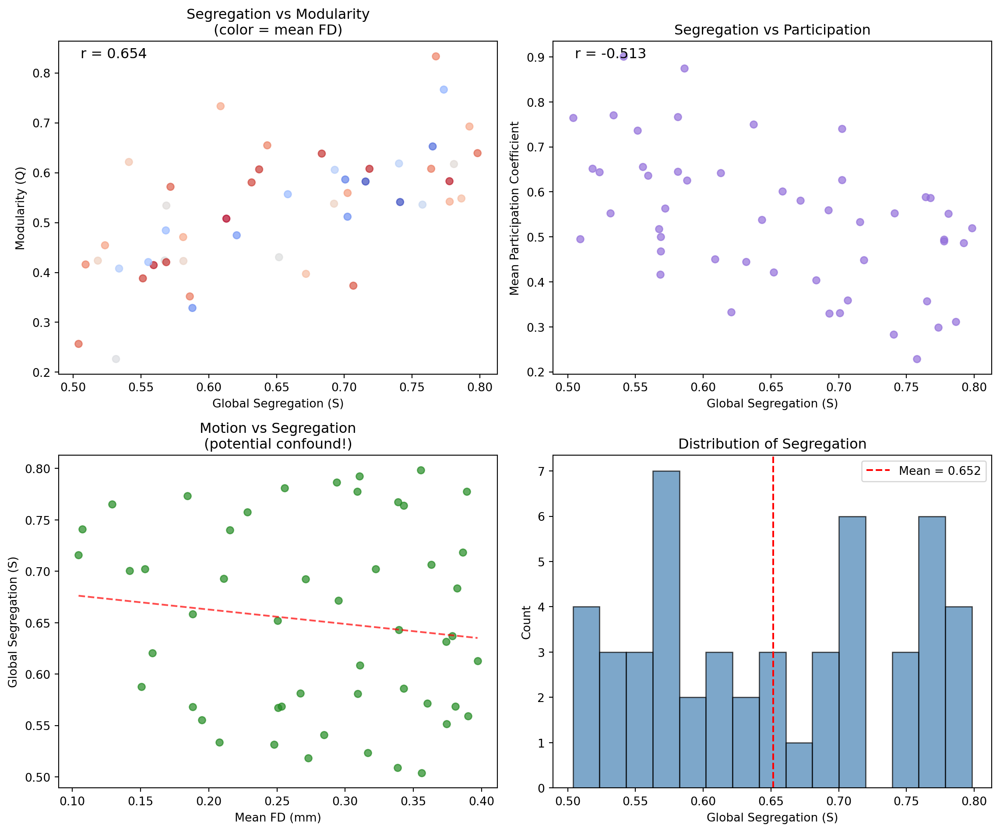

import numpy as np
import matplotlib.pyplot as plt
import seaborn as sns
from scipy.stats import zscore
# Network labels
NETWORK_LABELS = {
1: "Visual1",
2: "Visual2",
3: "Somatomotor",
4: "Cingulo-Opercular",
5: "Dorsal-Attention",
6: "Language",
7: "Frontoparietal",
8: "Auditory",
9: "Default",
10: "Posterior-Multimodal",
11: "Ventral-Multimodal",
12: "Orbito-Affective",
}
def fisher_z_transform(r):
"""Fisher z-transform for correlations."""
with np.errstate(divide='ignore', invalid='ignore'):
z = np.arctanh(np.clip(r, -0.999, 0.999))
z[~np.isfinite(z)] = 0
return z5 Computing Network Metrics
5.1 Learning Objectives
By the end of this lesson, you will:
- Understand the full segregation computation workflow
- Know how participation coefficient and modularity complement segregation
- Understand the memory-efficient sampling approach
- Be able to interpret the output metrics
5.2 4.1 From Preprocessed Data to Segregation
5.2.1 The Complete Workflow
Preprocessed Data (time x 91k grayordinates)
|
For each network:
+-- Sample ~500 grayordinates from network
+-- Sample ~500 from other networks
+-- Compute within-network correlations -> W
+-- Compute between-network correlations -> B
|
S = (W - B) / W for each network
|
Global S = mean of network S values5.3 4.2 The Memory-Efficient Sampling Approach
5.3.1 Why Sampling?
Recall from Lesson 2: a full 91k x 91k matrix would require ~66 GB of RAM!
5.3.2 The Solution
For each network, we:
- Sample ~500 representative grayordinates
- Compute correlations only for sampled points
- Use these to estimate W and B
This is statistically valid because:
- Grayordinates within a network are relatively homogeneous
- Sample means converge to population means
- 500 samples provides good precision
def compute_network_segregation_efficient(
data,
atlas_data,
atlas_labels,
n_samples=500,
):
"""
Compute per-network segregation using memory-efficient sampling.
This is the CORE function from run_segregation_python.py
Parameters
----------
data : np.ndarray
Preprocessed timeseries (time x grayordinates)
atlas_data : np.ndarray
Network assignment per grayordinate
atlas_labels : dict
Network ID -> name mapping
n_samples : int
Number of grayordinates to sample per network
Returns
-------
dict
Network name -> {W, B, S}
"""
results = {}
for net_id, net_name in atlas_labels.items():
# Find grayordinates in this network and others
net_idx = np.where(atlas_data == net_id)[0]
other_idx = np.where((atlas_data != net_id) & (atlas_data > 0))[0]
if len(net_idx) < 2:
results[net_name] = {"W": np.nan, "B": np.nan, "S": np.nan}
continue
# Sample if network is large
if len(net_idx) > n_samples:
net_sample = np.random.choice(net_idx, n_samples, replace=False)
else:
net_sample = net_idx
if len(other_idx) > n_samples:
other_sample = np.random.choice(other_idx, n_samples, replace=False)
else:
other_sample = other_idx
# Extract timeseries for samples
net_ts = data[:, net_sample]
other_ts = data[:, other_sample]
# Z-score (standardize each grayordinate's timeseries)
net_ts_z = zscore(net_ts, axis=0, nan_policy='omit')
other_ts_z = zscore(other_ts, axis=0, nan_policy='omit')
net_ts_z = np.nan_to_num(net_ts_z)
other_ts_z = np.nan_to_num(other_ts_z)
# Compute WITHIN-network correlations
within_corr = np.corrcoef(net_ts_z.T)
np.fill_diagonal(within_corr, 0) # Remove self-correlations
within_corr[within_corr < 0] = 0 # Use positive only
within_z = fisher_z_transform(within_corr)
W = np.tanh(np.nanmean(within_z[np.triu_indices_from(within_z, k=1)]))
# Compute BETWEEN-network correlations
all_ts = np.column_stack([net_ts_z, other_ts_z])
all_corr = np.corrcoef(all_ts.T)
between_corr = all_corr[:len(net_sample), len(net_sample):]
between_corr[between_corr < 0] = 0
between_z = fisher_z_transform(between_corr)
B = np.tanh(np.nanmean(between_z))
# Segregation
S = (W - B) / W if W > 0 and not np.isnan(W) else np.nan
results[net_name] = {"W": W, "B": B, "S": S}
return results
# Demonstrate with simulated data
np.random.seed(42)
# Simulate data with network structure
n_timepoints = 200
n_grayordinates = 3000 # Simplified (real is 91k)
n_networks = 4
# Create network assignments
grayordinates_per_net = n_grayordinates // n_networks
fake_atlas = np.repeat(np.arange(1, n_networks + 1), grayordinates_per_net)
fake_labels = {1: "Visual", 2: "Motor", 3: "Default", 4: "Executive"}
# Create data with realistic network structure
# Grayordinates in same network share common signal
fake_data = np.zeros((n_timepoints, n_grayordinates))
for net_id in range(1, n_networks + 1):
mask = fake_atlas == net_id
# Common network signal
network_signal = np.random.randn(n_timepoints)
# Add to each grayordinate with noise
n_in_net = mask.sum()
for i, idx in enumerate(np.where(mask)[0]):
fake_data[:, idx] = (
0.6 * network_signal + # Shared signal (creates within-network correlation)
0.4 * np.random.randn(n_timepoints) # Unique noise
)
# Compute segregation
print("Computing segregation...")
seg_results = compute_network_segregation_efficient(fake_data, fake_atlas, fake_labels, n_samples=200)
# Display results
print("\nPer-Network Segregation Results")
print("=" * 50)
print(f"{'Network':<15} {'W':>8} {'B':>8} {'S':>8}")
print("-" * 50)
for net_name, metrics in seg_results.items():
print(f"{net_name:<15} {metrics['W']:>8.4f} {metrics['B']:>8.4f} {metrics['S']:>8.4f}")
# Compute global segregation
all_W = [v["W"] for v in seg_results.values() if not np.isnan(v["W"])]
all_B = [v["B"] for v in seg_results.values() if not np.isnan(v["B"])]
global_W = np.mean(all_W)
global_B = np.mean(all_B)
global_S = (global_W - global_B) / global_W
print("-" * 50)
print(f"{'GLOBAL':<15} {global_W:>8.4f} {global_B:>8.4f} {global_S:>8.4f}")Computing segregation...
Per-Network Segregation Results
==================================================
Network W B S
--------------------------------------------------
Visual 0.6615 0.0352 0.9467
Motor 0.6869 0.0165 0.9760
Default 0.6611 0.0424 0.9358
Executive 0.7130 0.0255 0.9643
--------------------------------------------------
GLOBAL 0.6806 0.0299 0.95615.4 4.3 Visualizing Segregation
Let’s create visualizations to better understand the results:
# Visualize the results
fig, axes = plt.subplots(1, 3, figsize=(15, 5))
networks = list(seg_results.keys())
W_vals = [seg_results[n]["W"] for n in networks]
B_vals = [seg_results[n]["B"] for n in networks]
S_vals = [seg_results[n]["S"] for n in networks]
# Plot 1: W vs B comparison
x = np.arange(len(networks))
width = 0.35
axes[0].bar(x - width/2, W_vals, width, label='Within (W)', color='steelblue', alpha=0.7)
axes[0].bar(x + width/2, B_vals, width, label='Between (B)', color='coral', alpha=0.7)
axes[0].set_xticks(x)
axes[0].set_xticklabels(networks, rotation=45, ha='right')
axes[0].set_ylabel('Mean Correlation')
axes[0].set_title('Within vs Between Network Connectivity')
axes[0].legend()
# Plot 2: Segregation by network
colors = ['steelblue' if n in ['Visual', 'Motor'] else 'coral' for n in networks]
axes[1].bar(networks, S_vals, color=colors, alpha=0.7, edgecolor='black')
axes[1].axhline(global_S, color='red', linestyle='--', label=f'Global S={global_S:.3f}')
axes[1].set_ylabel('Segregation (S)')
axes[1].set_title('Per-Network Segregation')
axes[1].legend()
axes[1].tick_params(axis='x', rotation=45)
# Plot 3: W-B scatter (each point is a network)
axes[2].scatter(W_vals, B_vals, s=100, c=S_vals, cmap='RdYlGn', edgecolors='black')
for i, net in enumerate(networks):
axes[2].annotate(net, (W_vals[i], B_vals[i]), xytext=(5, 5),
textcoords='offset points', fontsize=9)
axes[2].plot([0, 0.8], [0, 0.8], 'k--', alpha=0.3, label='W=B (S=0)')
axes[2].set_xlabel('Within-Network Correlation (W)')
axes[2].set_ylabel('Between-Network Correlation (B)')
axes[2].set_title('W vs B (color = Segregation)')
cbar = plt.colorbar(axes[2].collections[0], ax=axes[2], label='S')
plt.tight_layout()
plt.show()
5.5 4.4 Participation Coefficient
5.5.1 What is Participation Coefficient?
Participation coefficient (PC) measures how evenly a node’s connections are distributed across networks:
\[PC_i = 1 - \sum_{s=1}^{N_M} \left(\frac{k_{is}}{k_i}\right)^2\]
Where:
- \(k_{is}\) = connections from node \(i\) to network \(s\)
- \(k_i\) = total connections from node \(i\)
- \(N_M\) = number of networks
5.5.2 Interpretation
| PC Value | Interpretation |
|---|---|
| PC = 0 | All connections within own network (provincial hub) |
| PC = 1 | Connections equally distributed (connector hub) |
5.5.3 Relationship to Segregation
- High segregation <-> Low participation (networks stay separate)
- Low segregation <-> High participation (networks interconnected)
def calculate_participation_coefficient(corr_matrix, network_assignments):
"""
Calculate participation coefficient for each node.
From segregation_utils.py
Parameters
----------
corr_matrix : np.ndarray
Correlation matrix
network_assignments : np.ndarray
Network assignment for each node
Returns
-------
np.ndarray
Participation coefficient for each node
"""
M = corr_matrix.copy()
np.fill_diagonal(M, 0)
M[M < 0] = 0 # Use positive connections only
n = M.shape[0]
networks_unique = np.unique(network_assignments)
networks_unique = networks_unique[networks_unique > 0]
# Node strength (total connectivity)
strength = np.sum(M, axis=1)
PC = np.ones(n)
for i in range(n):
if strength[i] == 0:
PC[i] = 0
continue
sum_sq = 0
for net in networks_unique:
# Connections to this network
net_idx = np.where(network_assignments == net)[0]
net_strength = np.sum(M[i, net_idx])
sum_sq += (net_strength / strength[i]) ** 2
PC[i] = 1 - sum_sq
return PC
# Demonstrate with simulated network-level matrix
n_networks = 4
# Create network-level correlation matrix
# (simplified from grayordinate level)
net_corr = np.array([
[1.0, 0.6, 0.2, 0.15], # Visual: high within, lower between
[0.6, 1.0, 0.25, 0.2], # Motor
[0.2, 0.25, 1.0, 0.5], # Default: more between-network connectivity
[0.15, 0.2, 0.5, 1.0], # Executive
])
net_assignments = np.arange(1, n_networks + 1)
# Calculate PC
pc_values = calculate_participation_coefficient(net_corr, net_assignments)
# Visualize
fig, axes = plt.subplots(1, 2, figsize=(12, 5))
# Correlation matrix
sns.heatmap(net_corr, annot=True, fmt='.2f', cmap='RdBu_r', center=0,
xticklabels=networks, yticklabels=networks, ax=axes[0])
axes[0].set_title('Network Correlation Matrix')
# Participation coefficients
axes[1].bar(networks, pc_values, color='mediumpurple', alpha=0.7, edgecolor='black')
axes[1].set_ylabel('Participation Coefficient')
axes[1].set_title('Network Participation Coefficients')
axes[1].set_ylim(0, 1)
for i, v in enumerate(pc_values):
axes[1].text(i, v + 0.02, f'{v:.3f}', ha='center')
plt.tight_layout()
plt.show()
print("Interpretation:")
for net, pc in zip(networks, pc_values):
if pc < 0.5:
role = "Provincial (mostly within-network connections)"
else:
role = "Connector (distributed across networks)"
print(f" {net}: PC={pc:.3f} - {role}")
Interpretation:
Visual: PC=0.532 - Connector (distributed across networks)
Motor: PC=0.580 - Connector (distributed across networks)
Default: PC=0.609 - Connector (distributed across networks)
Executive: PC=0.567 - Connector (distributed across networks)5.6 4.5 Modularity (Q)
5.6.1 What is Modularity?
Modularity Q measures how well a network is divided into communities:
\[Q = \frac{1}{2m} \sum_{ij} \left[ A_{ij} - \frac{k_i k_j}{2m} \right] \delta(c_i, c_j)\]
Where:
- \(A_{ij}\) = connection strength between nodes \(i\) and \(j\)
- \(k_i, k_j\) = node strengths (total connections)
- \(m\) = total network strength
- \(\delta(c_i, c_j)\) = 1 if same community, 0 otherwise
5.6.2 Interpretation
| Q Value | Interpretation |
|---|---|
| Q = 0 | No community structure (random) |
| Q > 0.3 | Good community structure |
| Q > 0.5 | Strong community structure |
def calculate_modularity(corr_matrix, network_assignments, gamma=1.0):
"""
Calculate modularity Q for a given network partition.
From segregation_utils.py
Parameters
----------
corr_matrix : np.ndarray
Correlation matrix
network_assignments : np.ndarray
Community assignment for each node
gamma : float
Resolution parameter (default=1.0)
Returns
-------
float
Modularity Q value
"""
M = corr_matrix.copy()
np.fill_diagonal(M, 0)
M[M < 0] = 0
n = M.shape[0]
# Total weight
m = np.sum(M) / 2
if m == 0:
return 0.0
# Node strengths
k = np.sum(M, axis=1)
# Calculate modularity
Q = 0.0
for i in range(n):
for j in range(n):
# Only count if same community
if network_assignments[i] == network_assignments[j] and network_assignments[i] > 0:
# Actual - expected
Q += M[i, j] - gamma * (k[i] * k[j]) / (2 * m)
Q /= (2 * m)
return Q
# Calculate modularity for our network matrix
Q = calculate_modularity(net_corr, net_assignments)
print(f"Modularity Q = {Q:.4f}")
if Q > 0.5:
print("Interpretation: Strong community structure")
elif Q > 0.3:
print("Interpretation: Good community structure")
else:
print("Interpretation: Weak community structure")Modularity Q = -0.2514
Interpretation: Weak community structure5.7 4.6 Putting It All Together
5.7.1 The Complete Output
The pipeline outputs these metrics for each subject:
# Simulate complete output for one subject
subject_results = {
# Identification
'subject': 'sub-BUGMM005',
'task': 'rest',
'excluded': False,
# Volume info
'n_volumes_original': 273,
'n_volumes_used': 265,
# Motion metrics (for use as covariate)
'mean_fd': 0.18,
'max_fd': 0.52,
'prop_censored': 0.03,
# Global metrics
'global_W': global_W,
'global_B': global_B,
'global_segregation': global_S,
'modularity_Q': Q,
}
# Add per-network metrics
for net_name, metrics in seg_results.items():
subject_results[f'seg_{net_name}'] = metrics['S']
subject_results[f'W_{net_name}'] = metrics['W']
subject_results[f'B_{net_name}'] = metrics['B']
# Add participation coefficients
for net_name, pc in zip(networks, pc_values):
subject_results[f'PC_{net_name}'] = pc
# Display
print("Complete Subject Output")
print("=" * 60)
for key, value in subject_results.items():
if isinstance(value, float):
print(f"{key:<30} {value:>10.4f}")
else:
print(f"{key:<30} {str(value):>10}")Complete Subject Output
============================================================
subject sub-BUGMM005
task rest
excluded False
n_volumes_original 273
n_volumes_used 265
mean_fd 0.1800
max_fd 0.5200
prop_censored 0.0300
global_W 0.6806
global_B 0.0299
global_segregation 0.9561
modularity_Q -0.2514
seg_Visual 0.9467
W_Visual 0.6615
B_Visual 0.0352
seg_Motor 0.9760
W_Motor 0.6869
B_Motor 0.0165
seg_Default 0.9358
W_Default 0.6611
B_Default 0.0424
seg_Executive 0.9643
W_Executive 0.7130
B_Executive 0.0255
PC_Visual 0.5319
PC_Motor 0.5805
PC_Default 0.6094
PC_Executive 0.56755.8 4.7 Relationship Between Metrics
Let’s visualize how these metrics relate to each other:
# Simulate multiple subjects
np.random.seed(42)
n_subjects = 50
# Generate correlated metrics (as they would be in real data)
base_W = np.random.uniform(0.4, 0.7, n_subjects)
base_B = base_W * np.random.uniform(0.2, 0.5, n_subjects) # B is fraction of W
segregation = (base_W - base_B) / base_W
modularity = segregation * 0.8 + np.random.randn(n_subjects) * 0.1 # Correlated with S
modularity = np.clip(modularity, 0, 1)
participation = 1 - segregation * 0.7 + np.random.randn(n_subjects) * 0.15 # Anti-correlated
participation = np.clip(participation, 0, 1)
mean_fd = np.random.uniform(0.1, 0.4, n_subjects)
# Create visualization
fig, axes = plt.subplots(2, 2, figsize=(12, 10))
# S vs Q
axes[0, 0].scatter(segregation, modularity, c=mean_fd, cmap='coolwarm', alpha=0.7)
axes[0, 0].set_xlabel('Global Segregation (S)')
axes[0, 0].set_ylabel('Modularity (Q)')
axes[0, 0].set_title('Segregation vs Modularity\n(color = mean FD)')
r = np.corrcoef(segregation, modularity)[0, 1]
axes[0, 0].text(0.05, 0.95, f'r = {r:.3f}', transform=axes[0, 0].transAxes, fontsize=12)
# S vs PC
axes[0, 1].scatter(segregation, participation, c='mediumpurple', alpha=0.7)
axes[0, 1].set_xlabel('Global Segregation (S)')
axes[0, 1].set_ylabel('Mean Participation Coefficient')
axes[0, 1].set_title('Segregation vs Participation')
r = np.corrcoef(segregation, participation)[0, 1]
axes[0, 1].text(0.05, 0.95, f'r = {r:.3f}', transform=axes[0, 1].transAxes, fontsize=12)
# S vs FD
axes[1, 0].scatter(mean_fd, segregation, c='forestgreen', alpha=0.7)
axes[1, 0].set_xlabel('Mean FD (mm)')
axes[1, 0].set_ylabel('Global Segregation (S)')
axes[1, 0].set_title('Motion vs Segregation\n(potential confound!)')
# Add regression line
z = np.polyfit(mean_fd, segregation, 1)
p = np.poly1d(z)
axes[1, 0].plot(np.sort(mean_fd), p(np.sort(mean_fd)), 'r--', alpha=0.7)
# Distribution of S
axes[1, 1].hist(segregation, bins=15, color='steelblue', alpha=0.7, edgecolor='black')
axes[1, 1].axvline(segregation.mean(), color='red', linestyle='--',
label=f'Mean = {segregation.mean():.3f}')
axes[1, 1].set_xlabel('Global Segregation (S)')
axes[1, 1].set_ylabel('Count')
axes[1, 1].set_title('Distribution of Segregation')
axes[1, 1].legend()
plt.tight_layout()
plt.show()
5.9 4.8 Key Takeaways
5.9.1 Summary
- Memory-efficient sampling makes computation tractable
- Sample ~500 grayordinates per network
- Compute W and B from samples
- ~1000x memory reduction
- Segregation (S) is the primary metric
- Per-network: How distinct is this network?
- Global: Average distinctness across networks
- Complementary metrics:
- Participation Coefficient: Hub role (provincial vs connector)
- Modularity Q: Overall community structure quality
- Output includes motion metrics for use as covariates
5.9.2 Connection to Pipeline
In run_segregation_python.py:
compute_network_segregation_efficient()computes per-network W, B, Scompute_participation_efficient()computes network-level PCcalculate_modularity()computes Q from network correlation matrix
5.10 Exercises
5.10.1 Exercise 4.1: Sampling Stability
How stable are the segregation estimates across different random samples?
n_iterations = 10
global_S_values = []
for i in range(n_iterations):
np.random.seed(i) # Different seed each time
results = compute_network_segregation_efficient(fake_data, fake_atlas, fake_labels, n_samples=200)
all_S = [v["S"] for v in results.values() if not np.isnan(v["S"])]
global_S_values.append(np.mean(all_S))
print(f"Segregation across {n_iterations} random samples:")
print(f" Mean: {np.mean(global_S_values):.4f}")
print(f" Std: {np.std(global_S_values):.4f}")
print(f" Range: {np.min(global_S_values):.4f} - {np.max(global_S_values):.4f}")
print(f"\nThe estimates are {'stable' if np.std(global_S_values) < 0.02 else 'unstable'}!")Segregation across 10 random samples:
Mean: 0.9549
Std: 0.0017
Range: 0.9525 - 0.9585
The estimates are stable!5.11 Next Lesson
In Lesson 5, we’ll learn about:
- Why motion is a critical confound in aging studies
- How to use FD as a covariate
- Run-level exclusion strategies
- Best practices for reporting
Continue to Lesson 5: Motion Confounds and Group Comparisons